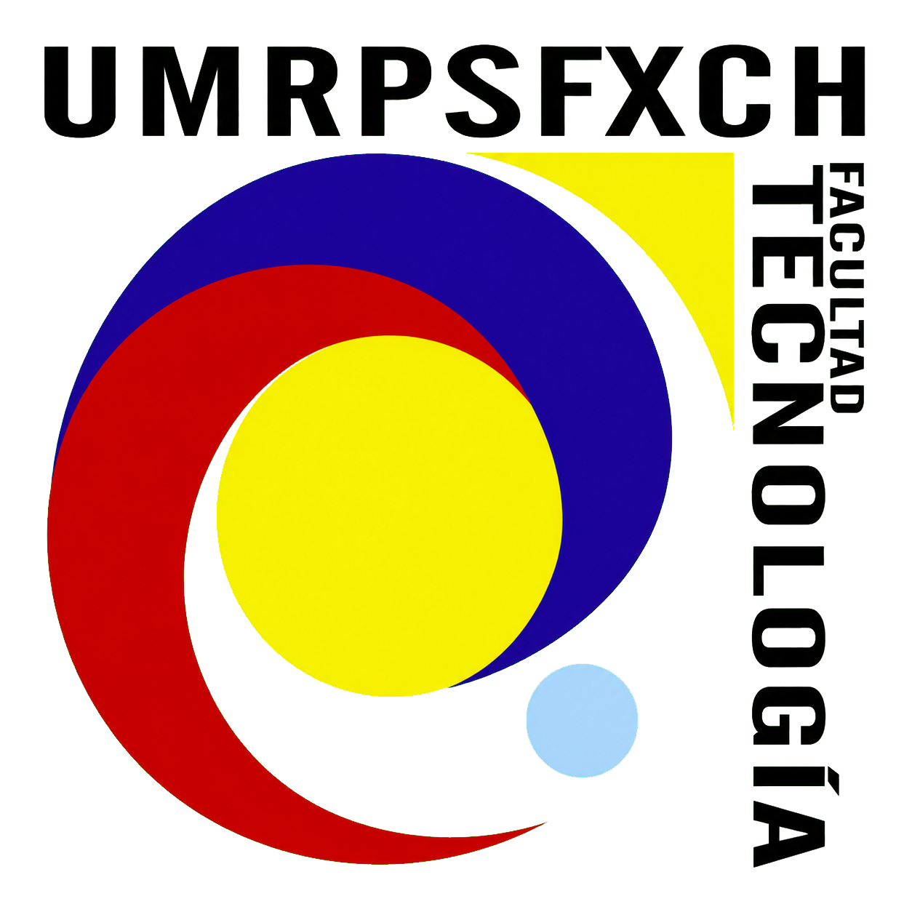

Predicción multisalida para el tratamiento bacteriano de lixiviados.

Registre las propiedades fisicoquímicas antes del tratamiento.
Elija una o varias cepas para el tratamiento.
Abra cada tarjeta, complete sus valores y guarde la configuración.
No se aplicarán bacterias en este experimento.
Defina las condiciones en las que se ejecutará el tratamiento.
Validando variables de entrada…
Comparación entre la condición inicial y la salida estimada.
Complete los pasos anteriores para consultar el modelo.